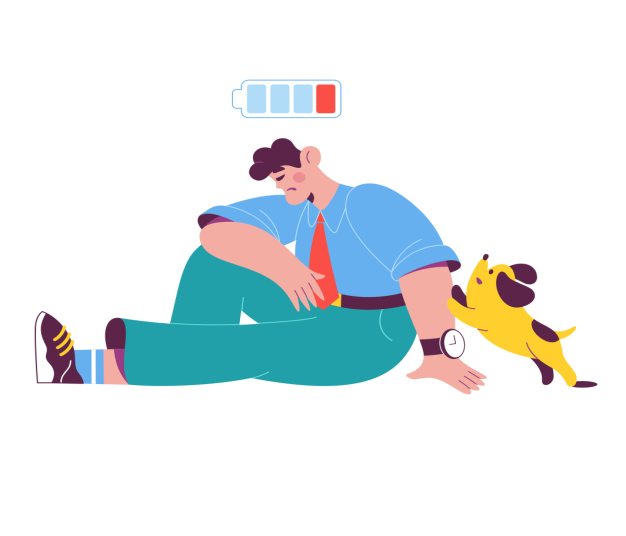

Sociologie
La digitalisation du travail a eu un impact conséquent sur notre vie socioprofessionnelle avec :
La mise en place de tickets dans certaines entreprises
amenant alors à déshumanisation des échanges semblables au fonctionnement de grandes firmes comme Amazon.
La surconnectivité des personnes qui n’arrivent plus à mettre de frontières
entre vie privée et vie professionnelle (ce qui les rend plus productifs/ réactifs/ engagées dans leurs entreprise).
L’augmentation des messages vocaux qui se substituent
progressivement au téléphone (sms/ appel tandis que les plateformes collaboratives se substituent aux mails.
Limites
Cette pratique a aussi ses limites car tous les
métiers ne peuvent pas mettre en place cette pratique (métiers manuels, entretien, de service…).
Toutes les personnes ne sont pas propice à cette pratique et peuvent
- Tomber dans des addictions : addictions à l’écran ou au travail, développer une
obsession pour leur métier(otaku). Actuellement, la cyberdépendance est en passe de devenir
l’addiction la plus répandue face à la toxicomanie (4%) et l'alcoolisme (10%).
- Ne plus réussir à nouer des liens sociaux (isolement)
- Ne plus réussir à sortir de chez eux(agoraphobie) ou ne plus réussir
à s’adapter à la société qui les entoure (perdre l’habitude d’évoluer dans un environnement
autre que le leur car ils ressentent trop de pression quand ils sont hors de chez eux (syndrome hikikomori).

Nos conseils
Pour pallier au moindre risque, les personnes adeptent de cette pratique doivent obéir à des habitudes :
Un rythme respectant leur horloge biologique
Un droit à la déconnexion
Un suivi psychologique régulier s'ils ont un terrain propice aux troubles psychiques